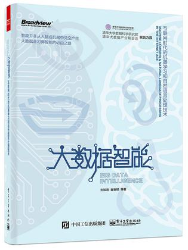

|  |
大数据智能：互联网时代的机器学习和自然语言处理技术
作者：刘知远，崔安颀，赵鑫，张开旭，韩文弢，张永锋
北京：电子工业出版社，2016年1月第1版，ISBN：9787121276484
欢迎读者朋友的反馈与建议：liuzy@tsinghua.edu.cn。
|
内容简介
本书是一本介绍大数据智能分析的科普书籍，旨在让更多的人了解和学习互联网时代的机器学习和自然语言处理技术，以期让大数据技术更好地为我们的生产和生活服务。
全书包括大数据智能基础和大数据智能应用两个部分，共8章。大数据智能基础部分有三章：第1章以深度学习为例介绍大数据智能的计算框架；第2章以知识图谱为例介绍大数据智能的知识库；第3章介绍大数据的计算处理系统。大数据智能应用部分有5章：第4章介绍智能问答，第5章介绍主题模型，第6章介绍个性化推荐，第7章介绍情感分析与意见挖掘，第8章介绍面向社会媒体内容的分析与应用。最后在本书的后记部分为读者追踪大数据智能的最新学术材料提供了建议。
本书适合作为高等院校计算机相关专业的研究生学习参考资料，也适合电脑爱好者阅读。作者特别希望本书能够帮助所有愿意对大数据技术有所了解，以及想要将大数据技术应用于本职工作的读者。
作者简介
- 刘知远，2011年清华大学博士毕业，现任清华大学计算机系助理研究员。研究兴趣为自然语言处理与社会计算。曾获清华大学优秀博士论文、中国人工智能学会优秀博士论文、清华大学优秀博士后等称号。电子邮箱：liuzy@tsinghua.edu.cn。
- 崔安颀，2013年清华大学博士毕业，现任加拿大滑铁卢大学博士后研究员。参与智能问答创业，部分产品已在微信、手机等多种平台上线。研究兴趣为情感分析、问答系统与社交媒体分析。电子邮箱：caq@caq9.info。
- 赵鑫，2014年北京大学博士毕业，现任中国人民大学信息学院计算机系教师。研究兴趣为社交媒体数据挖掘与自然语言处理。曾获北京大学优秀博士论文、微软学者等称号。 电子邮箱：batmanfly@gmail.com。
- 张开旭，2012年清华大学博士毕业，曾经和现在就职于BAT和创业公司。研究兴趣为自然语言处理与机器学习。电子邮箱：zhangkaixu@outlook.com。
- 韩文弢，2015年清华大学博士毕业，现任清华大学计算机系博士后研究员。研究兴趣为计算机系统。曾带领学生团队搭建清华大学“学堂在线”MOOC平台初版并成功上线。电子邮箱：hanwentao@tsinghua.edu.cn。
- 张永锋，清华大学计算机系博士生，加州大学圣克鲁兹分校访问学者。研究兴趣为信息检索、个性化推荐与计算经济学。曾获西贝尔学者、百度学者、微软学者等称号。电子邮箱：yongfengz@foxmail.com。
图书目录
- 前言：大数据时代与人工智能
- 第1章：深度学习——机器大脑的结构
- 第2章：知识图谱——机器大脑中的知识库
- 第3章：大数据系统——大数据背后的支撑技术
- 第4章：智能问答——智能助手是如何炼成的
- 第5章：主题模型——机器的智能摘要利器
- 第6章：个性化推荐系统——如何了解电脑背后的TA
- 第7章：情感分析与意见挖掘——计算机如何了解人类情感
- 第8章：面向社会媒体大数据的语言使用分析及应用
- 后记：如何追踪大数据智能领域的最新学术资料